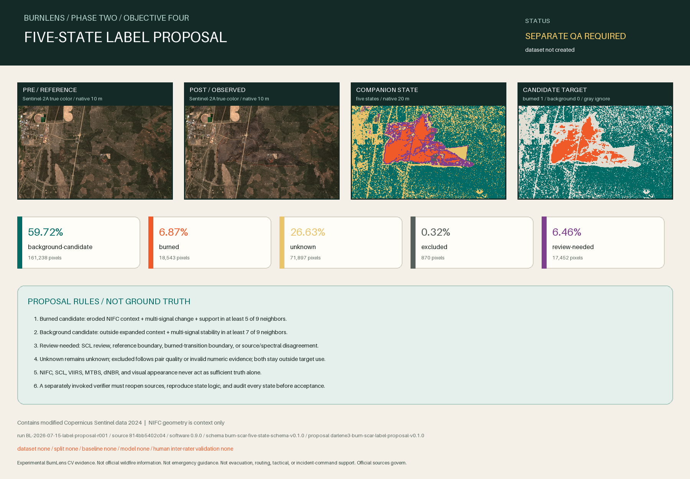

Experimental BurnLens CV evidence. Not official wildfire information. Not emergency guidance. Not evacuation, routing, tactical, or incident-command support. Official sources govern.

Proposal status
PROPOSE_FIVE_STATE_LABELS_FOR_SEPARATE_QA
Create a deterministic native-grid candidate target and five-state companion raster for separate QA. No candidate pixel is accepted ground truth, and no dataset, split, baseline, or model is created.
Machine gate: PROPOSAL_READY_FOR_SEPARATE_QA.
State inventory
| State | Code | Target | Pixels | Share |
|---|---|---|---|---|
| background-candidate | 0 | 0 | 161,238 | 59.7178% |
| burned | 1 | 1 | 18,543 | 6.8678% |
| unknown | 2 | ignore | 71,897 | 26.6285% |
| excluded | 3 | ignore | 870 | 0.3222% |
| review-needed | 4 | ignore | 17,452 | 6.4637% |
Frozen proposal method
Burned candidates require incident-reference context plus multiple independent spectral changes. Background candidates require affirmative multi-signal stability away from the reference. Candidate evidence must also be locally coherent. These are proposal-screen rules for this exact pair, not universal burn/severity thresholds or field calibration.
- dNBR minimum: 0.10; at least 2 of NDVI loss ≥ 0.05, SWIR gain ≥ 0.02, and NIR loss ≥ 0.02; at least 5 of 9 neighborhood pixels must support the burn screen.
- Stable evidence requires |dNBR| ≤ 0.03, |NDVI change| ≤ 0.03, |SWIR change| ≤ 0.01, and |NIR change| ≤ 0.01; at least 7 of 9 neighborhood pixels must be stable.
- One native 20 m pixel is reserved around the incident-reference boundary and candidate burned transitions.
Traceability
Run: BL-2026-07-15-label-proposal-r001
Git source: 814bb5402c04708f1515135683eac1304bf075c1
Software / report: 0.9.0 / burn-scar-label-proposal-evidence-v0.1.0
AOI / target: aoi-darlene3-model-v0.2.0 / target-burn-scar-v0.2.0
Protocol / schema / proposal: burn-scar-label-protocol-v0.1.0 / burn-scar-five-state-schema-v0.1.0 / darlene3-burn-scar-label-proposal-v0.1.0
Application / dataset / split / baseline / model: none / none / none / none / none
Boundaries
- This is a proposal for separate QA, not accepted ground truth.
- The NIFC geometry is mixed-method incident-reference context, not a pixel-perfect perimeter.
- SCL and continuous spectral change have known limitations and never become sufficient truth alone.
- The separate deterministic QA path is not independent human inter-rater validation.
- No dataset, split, baseline, model, metric, application, deployment, operational result, official status, endorsement, or field-validation claim exists.
- Contains modified Copernicus Sentinel data 2024. Official sources govern.